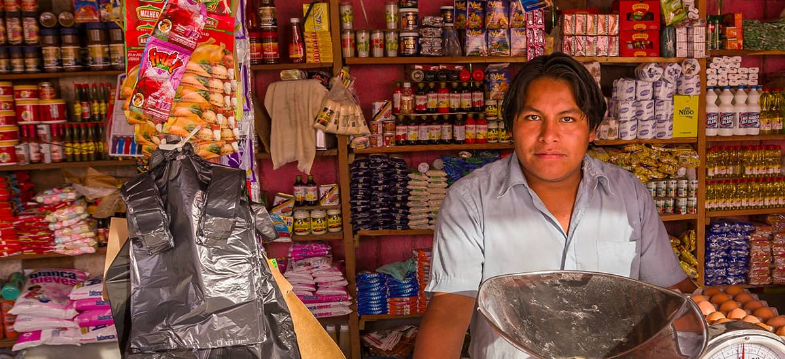

Hace algunos años, en un pequeño rincón del barrio, nació La de la Esquina, una tiendita sencilla con estantes modestos y un mostrador que parecía más un punto de encuentro que un negocio. Todo comenzó con la idea de tener un lugar donde los vecinos pudieran encontrar lo que necesitaban sin complicaciones: lo básico de la despensa, un antojo de último momento o simplemente una plática rápida mientras se llevaba el mandado. Poco a poco, La de la Esquina se ganó el corazón de la comunidad: los niños venían por sus dulces después de la escuela, las familias confiaban en encontrar siempre lo que buscaban y los amigos sabían que aquí, además de surtirse, siempre había una sonrisa esperando. Hoy seguimos siendo la misma tiendita cercana, pero con más variedad, mejores servicios y el mismo espíritu que nos vio empezar: estar siempre contigo, en la esquina de tu vida cotidiana. Porque cuando alguien en el barrio dice “voy a la tienda”, todos saben de cuál se habla… de La de la Esquina.
